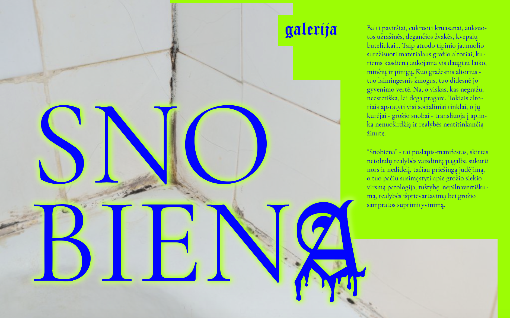

<div id="home-container" class="background relative-box">
	

	<button id="gallery-button" routerLink="/kategorijos" class="gallery-button"></button>
</div>


<!-- 
<div class="home-background">
	<div class="home-green-bg">
		<table class="home">
			<colgroup>
				<col width="50%" />
		    	<col width="19%" />
		    	<col width="21.7%" />	
		    	<col width="9.3%" />	
			</colgroup>	    
		    <tr>
		        <td></td>
		        <td valign="top">Galerija</td>
		        <td class="text text-block">
		        	Balti paviršiai, cukruoti kruasanai, auksuo- tos užrašinės, degančios žvakės, kvepalų buteliukai... Taip atrodo tipinio jaunuolio surežisuoti materialaus grožio altoriai, ku- riems kasdieną aukojama vis daugiau laiko, minčių ir pinigų. Kuo gražesnis altorius - tuo laimingesnis žmogus, tuo didesnė jo gyvenimo vertė. Na, o viskas, kas negražu, neestetiška, lai dega pragare. Tokiais alto- riais apstatyti visi socialiniai tinklai, o jų kūrėjai - grožio snobai - transliuoja į aplin- ką nenuoširdžią ir realybės neatitinkančią žinutę.
		        	<br/><br/>
					“Snobiena” - tai puslapis-manifestas, skirtas netobulų realybės vaizdinių pagalba sukurti nors ir nedidelį, tačiau priešingą judėjimą, o tuo pačiu susimąstyti apie grožio siekio virsmą patologija, tuštybę, nepilnavertišku- mą, realybės išprievartavimą bei grožio sampratos suprimityvinimą.
		        </td>
		        <td></td>
		    </tr>
		</table>	
	</div>
</div>
 -->